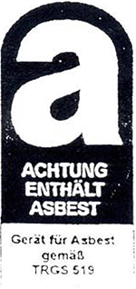

Behördlich oder von den Trägern der gesetzlichen Unfallversicherung anerkannte Industriestaubsauger oder ortsveränderliche Entstauber zum Einsatz bei Tätigkeiten mit asbesthaltigen Materialien müssen nachfolgende Anforderungen erfüllen:
| 1. | Baumusterprüfung | |
| Für die Geräte muss der Nachweis einer akkreditierten Prüfstelle über eine erfolgreiche Baumusterprüfung entsprechend der Staubklasse H nach DIN EN 60335-269, Anhang AA in Verbindung mit den zusätzlichen Anforderungen nach dieser TRGS vorliegen. | ||
| 2. | Typenschild | |
| Das Typenschild muss zusätzlich zu den Anforderungen nach DIN EN 60335-1 sowie DIN EN 60335-2-69 folgende Angaben enthalten: | ||
| – | Mindestluftvolumenstrom lt. Prüfzeugnis in m³h-1, bei Entstaubern zusätzlich der zugehörige Unterdruck in Pa | |
| – | Elektrische Schutzart | |
| – | Gewicht in kg 3. | |
| 3. | Kennzeichnung | |
| Geräte müssen mit folgendem Zeichen versehen sein:  | ||
| 4. | Filterung und Luftführung | |
| Bei Geräten mit einer Leistungsaufnahme bis 1,2 kW genügt eine einstufige Filterung; oberhalb 1,2 kW Leistungsaufnahme ist ein zusätzliches abreinigbares Vorfilter der Staubklasse M erforderlich. | ||
| Die Filterflächenbelastung des Vorfilters darf 200 m³m-2 h-1 nicht überschreiten. | ||
| Geräte mit einer Leistungsaufnahme oberhalb 1,2 kW müssen mit einem Anschluss für einen Abluftschlauch ins Freie ausgerüstet sein; für Geräte mit geringerer Leistungsaufnahme wird der Anschluss empfohlen. Der Abluftschlauch muss so dimensioniert sein (Querschnitt, Länge, Verlegung), dass auf der Saugseite der Mindestluftvolumenstrom nicht unterschritten wird. Dies wird in der Regel erreicht, wenn die Querschnittsfläche des Abluftschlauches doppelt so groß ist wie die des Saugschlauches. | ||
| 5. | Staubsammeleinrichtungen | |
| Die Geräte müssen mit Einrichtungen zur Aufnahme des abgeschiedenen Staubes versehen sein, die so stabil ausgeführt sind, dass sie vorhersehbaren Belastungen, insbesondere den von außen einwirkenden Beanspruchungen, widerstehen. Werden in Geräten Kunststoffsäcke als Staubsammeleinrichtung verwendet, sind diese durch eine formstabile Ummantelung zu schützen. | ||
| 6. | Filterwechsel | |
| Beim Austausch von Filtern muss sichergestellt sein, dass kein Staub austritt. Die Forderung ist erfüllt, wenn der Wechselfilter beim Herausnehmen verschlossen oder eingehüllt, sowie kein Staub sichtbar wird. | ||
| 7. | Elektrische Zusatzanforderungen | |
| Die Geräte müssen für den Einsatz auf Baustellen geeignet sein und den folgenden elektrischen sicherheitstechnischen Zusatzanforderungen genügen: | ||
| – | Netzanschlussleitung H07RNF oder gleichwertig | |
| – | Schutzart IP 54 nach DIN 40 050; ausgenommen sind Geräte mit einer Leistungsaufnahme bis 1,2 kW und Kollektormotor (Einphasengeräte), die der Schutzart IP X4 genügen müssen | |
| – | Eignung zum Aufsaugen von Wasser-Luft-Gemischen gemäß DIN EN 60335 – 2 -69, Abschn. 19.101 | |
| 8. | Betriebsanleitung | |
| Die für den sicheren Umgang mit den Geräten erforderlichen speziellen Angaben und Hinweise bzgl. der Gefahren durch Asbest sind in der Betriebsanweisung zusätzlich zu dokumentieren. Dies betrifft insbesondere alle Forderungen nach Nummer 8 der TRGS 519. | ||
| 9. | Ältere Geräte | |
| – | Bei älteren Geräten der Verwendungskategorie K 1 in Kombination mit einem im Gerät vorgeschalteten C-Filter, die vor 2002 eine Baumusterprüfung nach ZH 1/487 in Verbindung mit den Zusatzanforderungen an Asbestsauger (Ausgabe 2.1996) bestanden haben, wird der beschriebene Abscheidegrad erfahrungsgemäß ebenfalls eingehalten. Bei älteren Geräten mit einer Leistungsaufnahme bis 1 kW genügt die Verwendungskategorie K 1 mit einstufiger Filterung. Derartige Sauger erfüllen die Anforderungen der Nummer 4. | |
| – | Für das Betreiben älterer Geräte gelten die unter Punkt 7 genannten Sicherheitstechnischen Maßnahmen entsprechend. | |